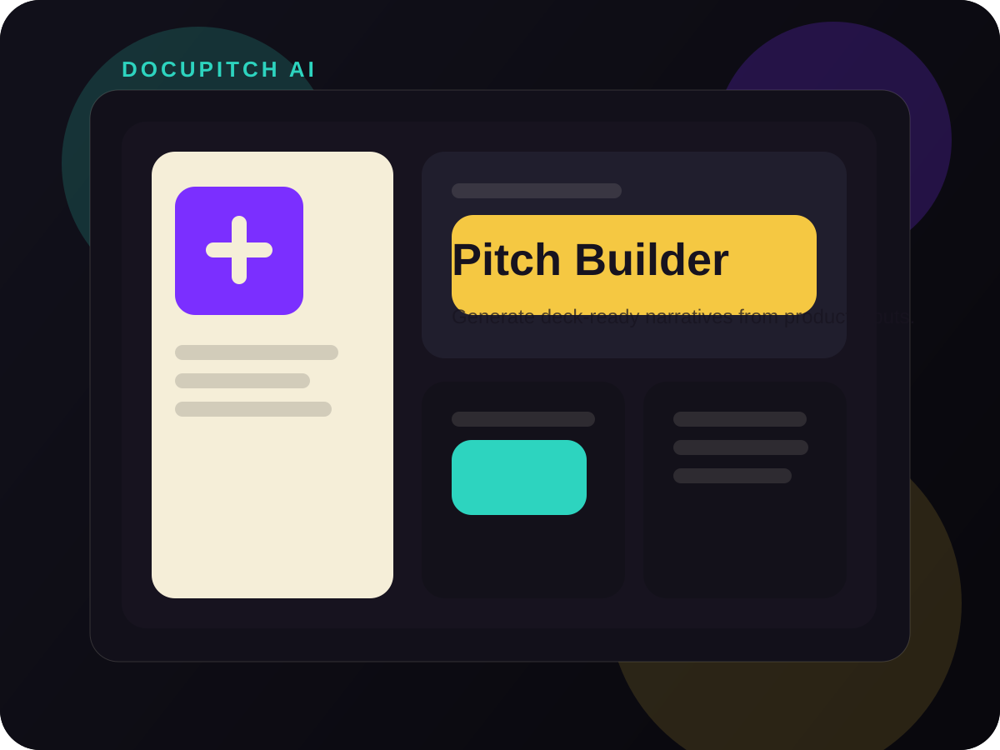

Challenge
AI products become confusing quickly when every input field competes for attention. This concept needed confidence, not complexity.
A guided product workflow that helps founders transform scattered notes into investor-facing stories, deck structures and pitch-ready content using LLMs.

AI products become confusing quickly when every input field competes for attention. This concept needed confidence, not complexity.
The interface feels more product-led than experimental, which is critical when AI has to support high-trust business communication.